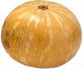

Zapallo

La siembra
Fecha: A mediados de octubre y noviembre.
Forma: Se siembra directamente sobre el cantero o sobre el suelo, colocando de 2 a 3 semillas por casilla o huequito.
Distancias: 1 metro entre casilla y casilla, y 2 metros entre filas.
Cantidad de semillas (para 10m2): 2 gramos para obtener unas 4 plantas.
¿Qué tenemos que hacer para cuidar nuestro cultivo?
- Es un cultivo muy sensible a las heladas.
- Sacar los yuyos para evitar la competencia al comienzo del cultivo, luego las guías cubren el suelo y compite mejor con las malezas.
- El riego es fundamental en la época de la floración.
- Es importante la polinización con abejas en este cultivo.
- Si se planta kabutiá, es necesario contar con una planta polinizadora como el coreanito o calabacín (un calabacín cada cuatro kabutiá).
La cosecha
- La cosecha se inicia a los 120 días de la siembra, cuando están bien maduros.
- Se recogen cuando el cabo del fruto se pone castaño y el zapallo cambia de verde brillante a verde opaco. Se pueden guardar varios meses en un galpón, aproximadamente hasta agosto.
Producción de semillas
Se eligen frutos sanos, maduros, de buenas características; se extraen las semillas, y estas se lavan, se secan y se guardan. Es conveniente que los frutos hayan estado antes un buen tiempo almacenados.